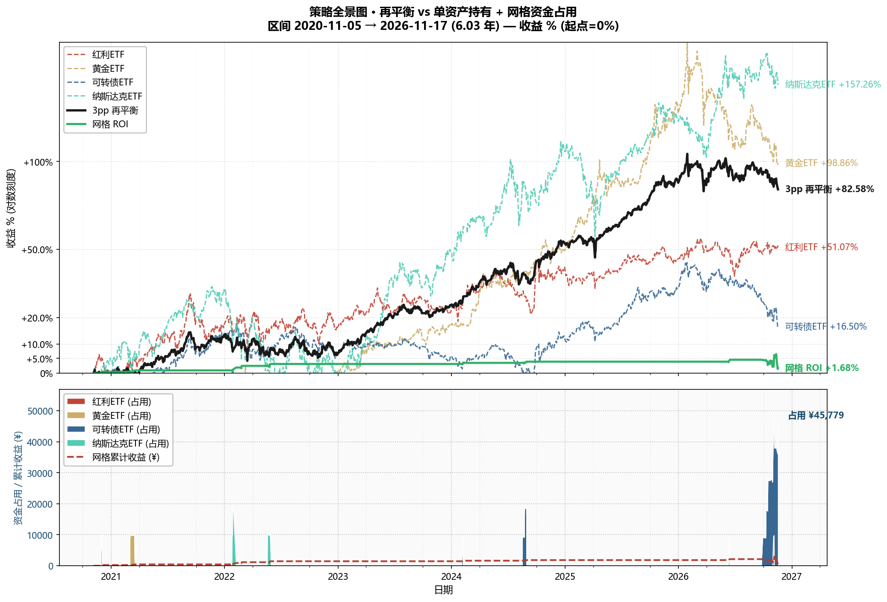

① 策略全景图
上：各资产买入持有收益（虚线）· 3pp 再平衡（黑色粗线）· 网格 ROI（绿线），收益 % 对数刻度
下：网格资金占用堆叠（各资产 持仓数量 × 收盘价）· 网格累计收益（红色虚线）

② 回测交易记录
回测模拟成交，含再平衡调仓与网格建仓 / 加仓 / 止盈，按时间倒序； 步长为网格专有（网格步长 = ATR × 步长倍数），再平衡不适用
③ 真实持仓
显示实际交易记录，包括策略、交易方向、数量、价格和历史交易；
初始资金 20 万是总金额，建仓不得超过剩余现金；
现金余额 = 初始资金 − 买入支出 + 卖出收入；
累计收益 = (总资产 − 初始资金) / 初始资金，总资产 = 现金余额 + 持仓市值；
市值按实际成交价（不复权）计算——账本记的是实际成交价、持仓是真实份额，
后复权价会把买入之前的分红也算进市值
网格组合
复合网格添加交易记录
④ 策略说明
策略名 → 规则描述 → 规则实现 三者一一对应； 规则描述由代码中的真实参数推导，参数改了描述自动跟着变